|
|
HELP FIND THE FOLLOWING LOCATIONS
PAGE 6
GIDEON’S WAY: The Alibi Man (Cyril Frankel: February 1965)
(East
Finchley) High Road, N2 – The
Carroway and Grant Garage (redeveloped as retirement flats called Mulberry
Court)where Cathy Bellman (Nicola Padget) goes looking for clues to
her sister’s whereabouts. After being fobbed off she sees Eric Little (James
Culliford) driving away and flags down a passing taxi to follow him.
(Identified by Wyn Roberts, June 2007)


Fortis
Green and Queen’s Avenue, N10 - Cathy Bellman follows Eric Little’s car in a
taxi, but the traffic lights at the junction (with Tetherdown) foil her
attempt.
(Identified by Wyn Roberts, June 2007)


Unknown 3 – Late at night Bruce Carroway races back to his garage through the London streets after his partner starts to examine the company records.
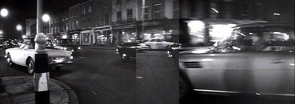
GIDEON’S WAY: Fall High, Fall Hard (Leslie Norman, November 1964)
The construction site for the Erickson-Randle Construction Company Ltd. In the site offices Mr Smith, the clerk of works is being lent on to lie in court by Jenson and Thompson. After the trial (Alexander Davion) and Detective Sergeant Carmichael (Glyn Houston) go to interview Smith at the construction site. Later that day Tony Erickson is driven by his wife to speak to Smith at the site. This is all watched by and recorded by Detective Constable Bailey. Smith is told to meet Randle at the building site at nine o’clock that night. Jenson (Mike Pratt) and Thompson (Gordon Costelow) arrive in a for Zephyr instead of Randle and Detective Constable Bailey is unable to intervene.
Distaff Lane - St. Nicholas Cole Abbey
Upper Thames Street - St Mary, Somerset
Huggin Hill - Smiths Wharf, Queenhithe Dock


Unknown 1 – Thompson (Gordon Costelow) visits The Offices of the Erickson-Randle Construction Company Ltd to speak to Charlie Randle.
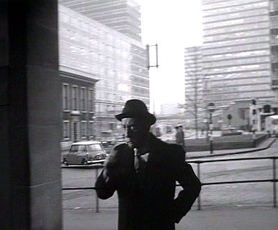
Ingram Avenue, NW11 - The home of Tony Erickson (Donald Houston) where he is preparing for his companies’ court case. After being arrested for speeding Tony Erickson is driven home by his wife. Unfortunately it is the night’s of his son’s party. Later Jenson and Thompson wait outside the house until Erickson is alone, they then kidnap Erickson.

Royal Courts of Justice – Detective Sergeant Carmichael is sent to observe the Erickson-Randle Construction Company trial.

Unknown 2 – Tony Erickson (Donald Houston) decides to get very drunk ant then decides to drive home in his jaguar.
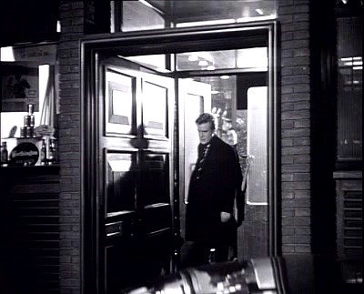 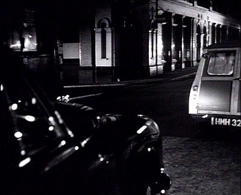
Unknown 3 – The police are soon on his trail.
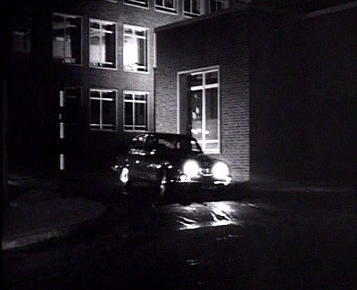
Unknown 4 –
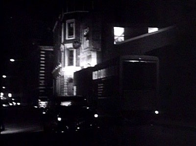
London Wall – Confirmed by Ian S. Bolton, August 2007


 London Wall?
London Wall?
Unknown 6 –

St Paul’s Cathedral, St. Paul’s Churchyard on toLudgate Hill -
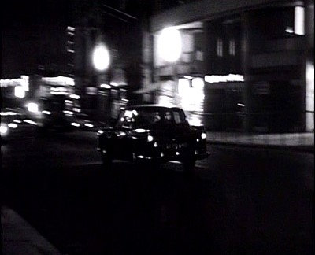 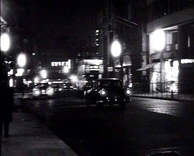


Unknown 7 –
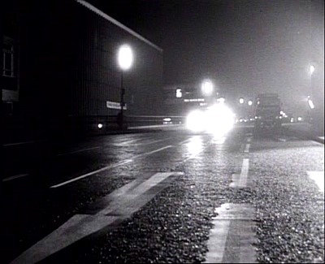
Unknown 8 –


Unknown 9 – A second police car is sent to lay in wait for the car.
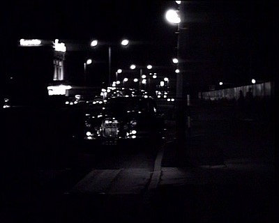 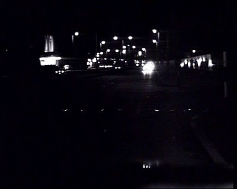 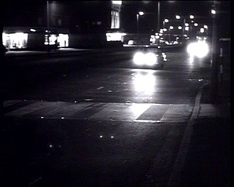 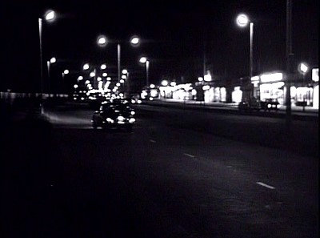
Unknown 10 –Jenson and Thompson kidnap Erickson and then stage a car crash with and unconscious Erickson at the wheel.
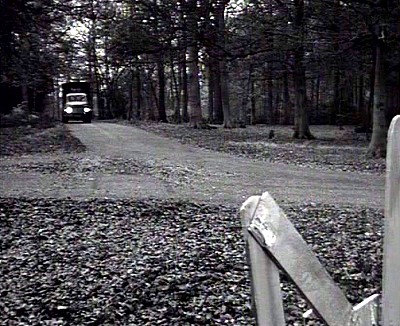

Unknown 11 –Jenson (Mike Pratt) drives Thompson (Gordon Costelow) to Banford Hospital in his Zephyr. He is there to dispose of Tony Erickson once and for all.


 Studio Administration Building,
ABC/Cannon Studios? – the interior shots looks like the ABC reception area.
Studio Administration Building,
ABC/Cannon Studios? – the interior shots looks like the ABC reception area.
GIDEON’S WAY: The Wall (Leslie Norman, January 1965)
Albert
Street NW1 –The bed-sitting room of Michael Penn
(Richard Carpenter) Netta Penn (Ann Bell) at 15 Retcar Street, Highgate, London
N19. As they leave they meet Mary Mason (Pauline Yates) and Ralph Mason
(Bernard Brown) who invite them over sometime. Commander Gideon (John Gregson)
and Detective Inspector David Keen (Alexander Davion) arrive in their police
car to question Will Ricker. Later they arrive back to respond to a call about
a missing babysitter.
(Identified by Alan Field, June 2008)


Delancey
Street – between Albert Street and Arlington Road – Michael Penn (Richard Carpenter) escorts his
wife Netta Penn (Ann Bell) to the bus stop and sees her off to work.
(Identified by Alan Field, August 2008)


Unknown 3 – Netta Penn is called to the local police station to give a statement about the kidnapping she has witnessed.

Delancey
Street – between Albert Street and Arlington Road – Netta Penn (Ann Bell) and Mary Mason (Pauline
Yates) discuss the kidnapping that Netta has witnessed as they walk home
together.
(Identified by Alan Field, August 2008)

Unknown 5 – Netta Penn is having a hard day at work after the disappearance of her husband.

 Morgan and
Ball: 54 Piccadilly, W1
Morgan and
Ball: 54 Piccadilly, W1
22 Cheapside, EC2
98 Strand, WC2
181 Strand, WC2
129 Victoria Street, SW1
Park Way, NW1 – As Gideon and Keen are driven in a police car they go through the statements from the Penn case.

 ManLee - 28 Park Way, Keeling’s -
30 Park Way
ManLee - 28 Park Way, Keeling’s -
30 Park Way
Kensal Road, W10 - As Gideon and Keen are driven in a police car they go through the statements from the Penn case, they decide to visit Penn’s office and then go to see his wife Netta.

St Pancras Way, NW1 - As Gideon and Keen are driven in a police car they go through the statements from the Penn case, they decide to visit Penn’s office and then go to see his wife Netta.


Crowndale Road, Camden Town, NW1 - Gideon and Keen hear about the missing babysitter on their police radio inside their police car and make a U-turn back to Retcar Street (outside The Working Men's College).


Think you know a spot? Need a bigger image? Email me.
< Previous | Index | Avengerland | Next >
Copyright © 2003 Anthony R. McKay